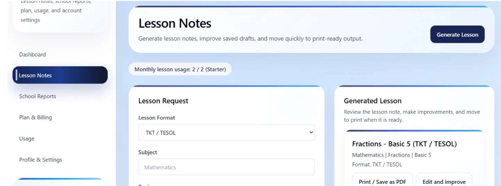
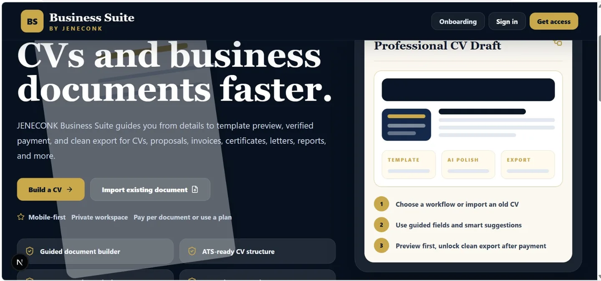
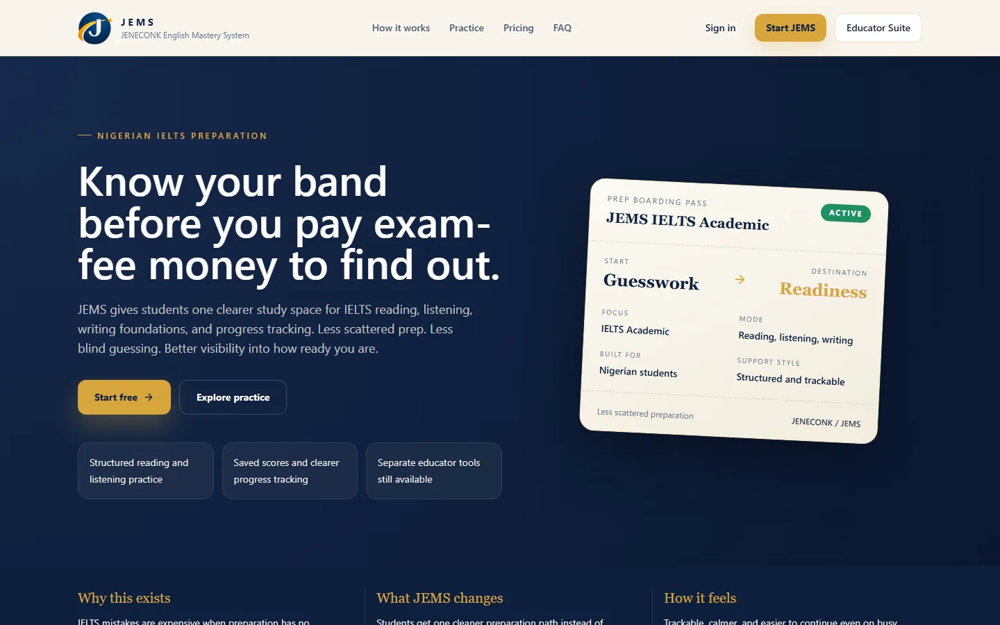
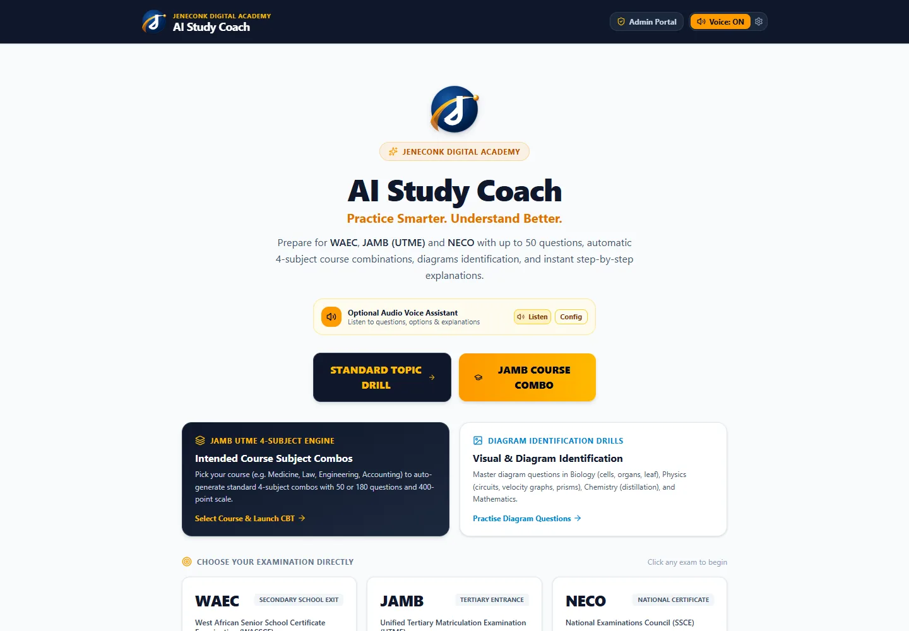
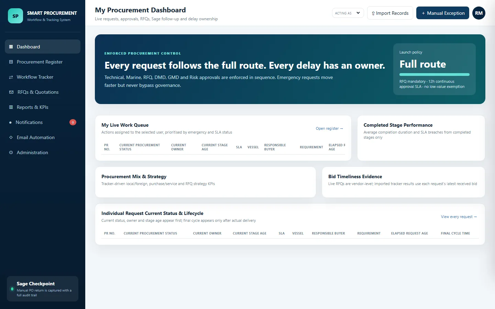
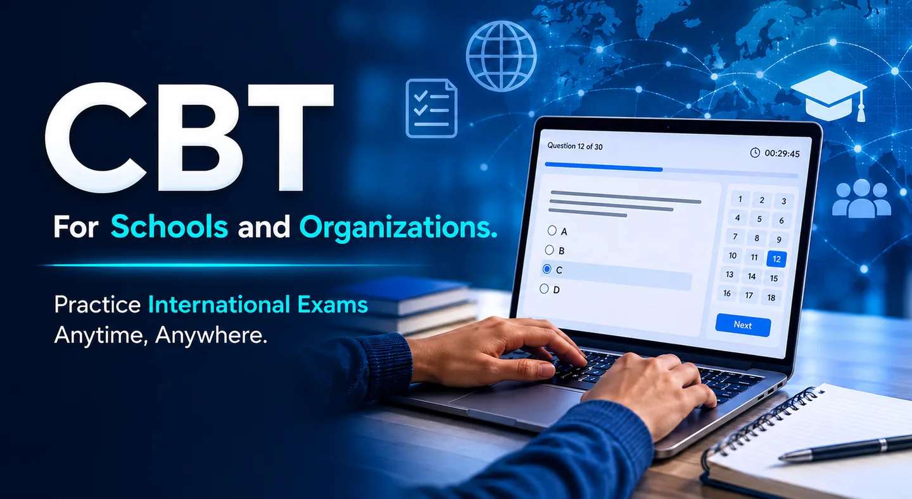
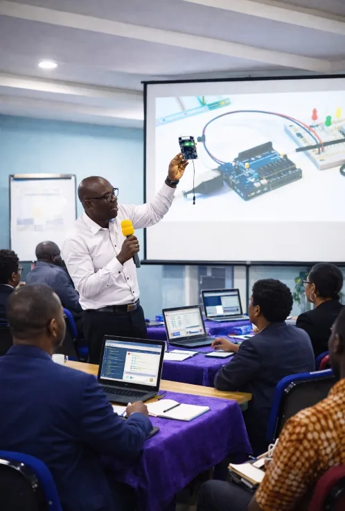

J JENECONK
Corporate proposal
Digital Growth
Strategy
Prepared for forward-thinking organizations
2026Education, Business and Professional Growth
From school documentation and English mastery to professional documents and procurement accountability, JENECONK builds practical products, free tools, and training for real work.
Ecosystem map
Choose the pathway that matches what you need to learn, build, manage, or improve.
For learners, parents, teachers, schools, tutors, and academic teams that need Maths and English practice, lesson notes, reports, schemes, assessments, visuals, diagrams, and better documentation workflows.
Enter EducationFor professionals, SMEs, churches, NGOs, and organizations that need better documents, proposals, letters, reports, invoices, and operational workflows.
Enter BusinessFor children, teenagers, administrators, churches, schools, businesses, and teams that need practical digital confidence and workplace-ready technology skills.
Explore AI Training AcademyCore business pillars
JENECONK is built from years of school, ICT, training, and productivity experience. The offer is not theory: it is systems people can use, training people can apply, and support organizations can rely on.

Instructor-led AI bootcamps, administrators training, automation, coding, cybersecurity, data, Excel, and digital-skills training for children, professionals, schools, churches, and organisations.
Explore AI Training Academy ->
Generate lesson notes, school reports, schemes, questions, assessments, AI diagrams, teaching visuals, and deep lesson runs in multiple formats.
Explore Edu Suite ->
Build CVs, proposals, official letters, certificates, reports, and polished business documents from guided workflows.
Explore Business Suite ->
Prepare for IELTS Academic through diagnostics, targeted practice, progress tracking and human feedback across all four skills.
Explore JEMS ->
Practise WAEC, JAMB UTME and NECO questions with flexible drills, course combinations, diagrams, CBT scoring and instant explanations.
Explore AI Study Coach ->
Track every request, approval, RFQ, owner, delay, delivery and payment stage through one accountable workflow.
Explore Smart Procurement ->
Online or offline examination environments scoped for schools, training centres, recruitment, and institutional testing.
Plan a CBT deployment ->
Build useful skills in AI productivity, administration, project management, Python, data, web design, cybersecurity, and ICT.
Explore training programs ->Built from experience
JENECONK brings together more than a decade of school experience, years of ICT training, laptop and setup support, professional exam environment assistance, and current AI productivity systems.
Tools and resources
Explore calculators, generators, guides, and practical resources that help teachers, schools, professionals, and business owners get useful work done faster.
Open free toolsLearn with JENECONK
Use step-by-step explanations, worked examples, comparison tables, exercises and practical checklists. These resources solve the reader's problem first and connect to products or training only when a structured next step is useful.
Build a teachable daily note with measurable objectives, learner activities, evaluation, assignment and a complete worked example.
Read the guideCompare tools for lesson planning, grading, worksheets, reports and parent communication, including pricing and free-access notes.
Compare 50 toolsLearn a professional prompting framework, responsible review habits, practice labs and the connection between AI and automation.
Start the AI guideInstall the tools, build a practice database, write queries, complete assignments and check worked answers.
Start learning SQLApply ten formulas to sales, stock, invoices, profit, pricing and monthly business performance.
Use the formula guideCapture authorised traffic, use display filters, interpret common protocols and write an evidence-based packet report.
Open the networking guideConnect Google Sheets, Apps Script, a live RSS feed, Gemini and Telegram through a corrected classroom workflow with real troubleshooting examples.
Build the automationBuilt for launch and growth
From school pilots to business productivity tools, JENECONK delivers modern, trustworthy experiences that can grow with real users and hosted SaaS products.

Latest training evidence | Completed 28 August 2026
This closing group photograph and the accompanying recap video document a live JENECONK AI bootcamp that concluded on 28 August 2026. The record shows real participation and delivery without turning attendance into an unsupported outcome claim.

Maths Gateway
The Academy carries visible proof from children and youth AI bootcamp sessions, including child-built maths learning work created after guided training. Their work shows how early learners can use AI creatively when they receive the right support.

Success story
Regions 33, 5 and 55 completed a two-day hands-on programme focused on AI-assisted reports, meeting minutes, research, presentations, digital productivity, and workflow automation for church administration.

Quick answers
Clear answers about JENECONK education, English mastery, procurement, business documents, CBT deployment, and training.
Yes. JENECONK supports CBT environments for online and offline examination use, including school assessments, entrance exams, training tests, and result workflows.
Edu Suite 2.0 supports AI lesson notes, school reports, schemes of work, questions, assessments, teaching visuals, AI diagrams, and multiple lesson formats including Traditional Nigerian, TKT, 5E, Montessori, British, tabular, and microteaching.
JEMS is the JENECONK English Mastery System, a structured English-learning and IELTS Academic preparation platform using diagnostics, targeted practice, progress tracking, and human feedback.
AI Study Coach supports WAEC, JAMB UTME and NECO practice with flexible question drills, course-based subject combinations, diagram identification, CBT scoring and step-by-step explanations.
Smart Procurement tracks requests, current owners, stage age, approvals, RFQs, vendor processing, delivery, invoice and payment follow-up, and the audit history of each procurement cycle.
Business Suite is for people and organizations that need professional documents quickly: CVs, cover letters, proposals, certificates, official letters, and branded templates.
Yes. Professional training remains a backbone of the company, including PRINCE2 Foundation support, project management, Python, data analysis, web design, AI productivity, and ICT skills.
Start with the right system
JENECONK Digital Academy students can submit assignments, receive assessment and view feedback online.